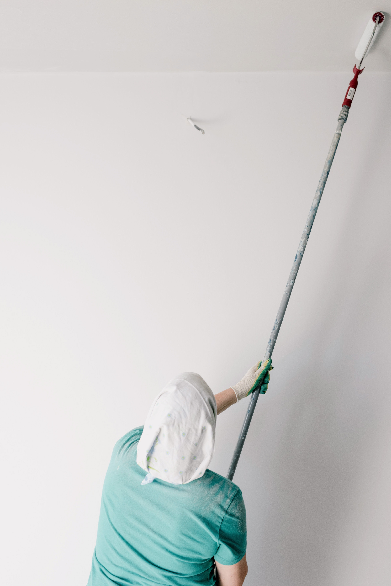

Contractors
Electricians
There are many reasons why one many need an electrician, expecially when moving in to a new place or moving out of a home.
As one prepares to move on to a new home, sometimes electrical work becomes a necessary step to fix a faulty fixture or a light or fan chain. All-in-one Movers can Help!
Painters
Painting! Who knew how much work painting can be? The prep work involved is so time consuming.
This is where All-in-one Movers can help you make things easier. We can help you connect with professional painters who can complete any painting job necessary. This will help your previous place be in top shape and your new place even greater!
Plumbers
No one ever plans to be in need of a plumber. When you do need one, it is usually a short notice. All-in-one Movers, can help you find one near you quickly.
Siding and RoofingThe unexpected need for roofers or siding work can create uncertainty whether the company is reputable. All-in-one Movers vets its partnership with all the contractors that are made available to the clients. This guarantees you will have peace of mind the moment the thought of looking for a reputable roofing and siding company.
Landscaping and Snow removal
Weather...Summer or Winter, finding the perfect landscaping company or snow removal company, All-in-one Movers can you find what is right for you!